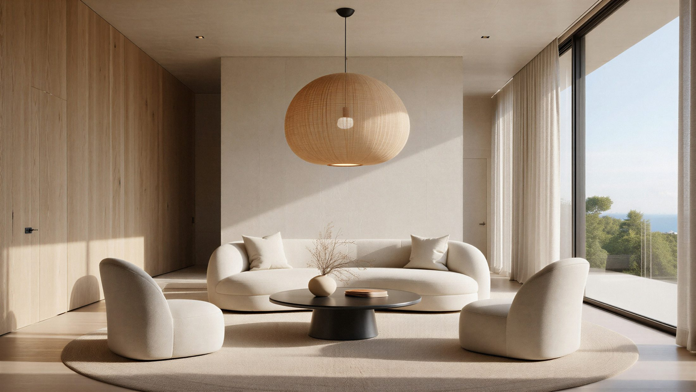
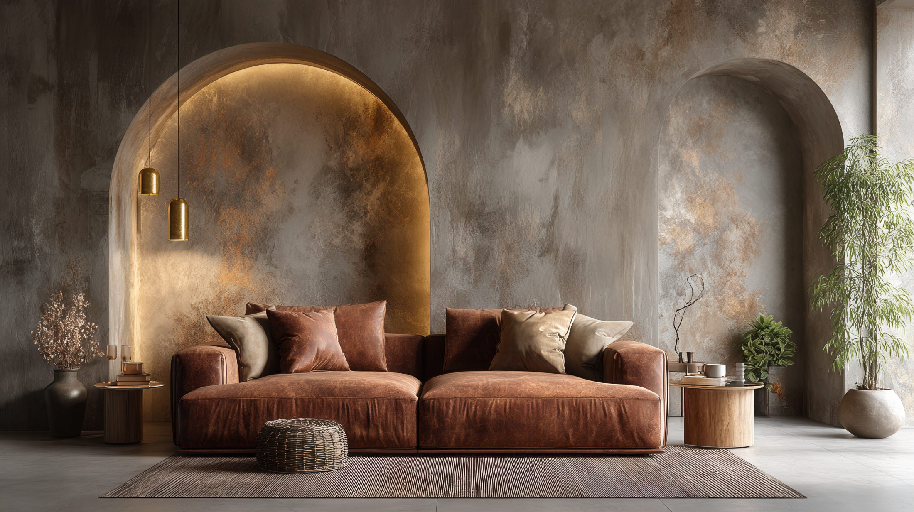
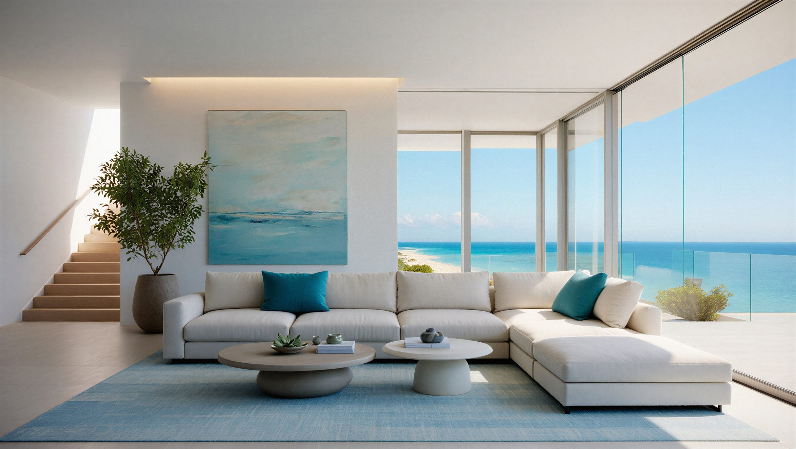
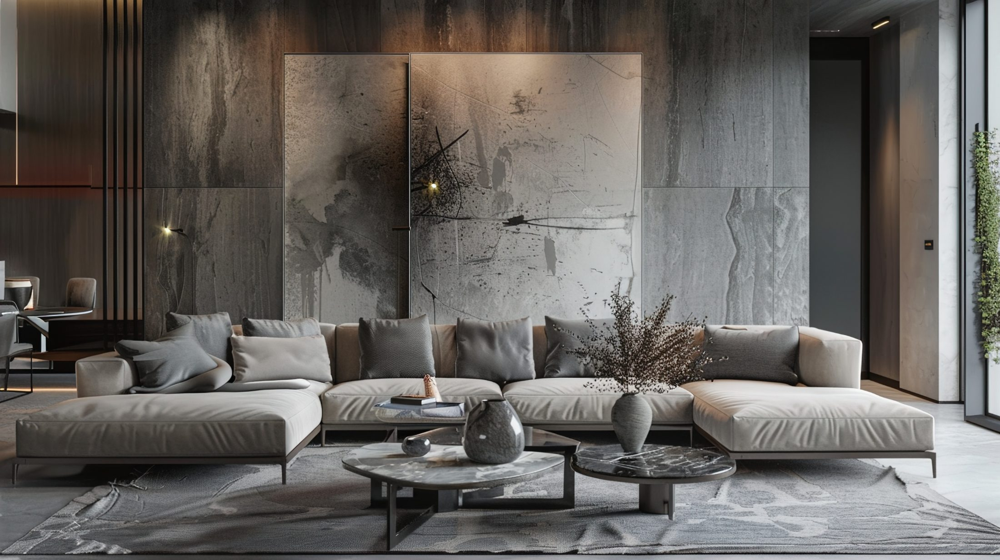
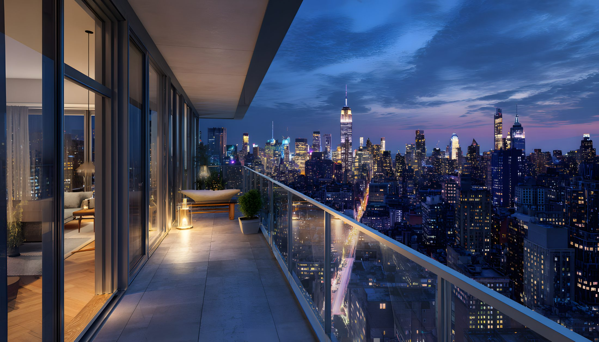

01 / FULL
全面リノベーション
間取り・性能・意匠を一度に編みなおす、住まいの再構築。


SINCE
1960
建て替えるべきか、リフォームか。
その問いの前にあるのは、
この家で重ねてきた時間の記憶だと、
わたしたちは考えています。
THE CONCERN
01
どこまで直せるのか
構造・配管・断熱――既存の家のどこに手を入れられるのか、判断がつきにくい。
02
費用が読めない
開けてみないと分からない、と言われ、総額の見通しが最後まで持てない。
03
仕上がりが見えない
耐震や断熱の性能も、完成後の暮らし心地も、契約前には確かめづらい。
SERVICE
部分の手直しから、住まい全体の編みなおしまで。設計〜施工〜アフターを自社一貫で。 （※仮）
間取り・性能・意匠を一度に編みなおす、住まいの再構築。

02 / WATERキッチン・浴室・洗面・トイレ。毎日の心地よさを底上げする。

03 / PERFORMANCE見えない部分こそ丁寧に。これからの安心を、構造から。
CASE STUDIES
REASONS
01
設計・施工・アフターを分断せず、同じ顔ぶれで最後まで。責任の所在が明快です。
02
意匠だけでなく、見えない性能を標準仕様で。これからの安心を構造から整えます。
03
引き渡しは終わりではなく始まり。定期点検と長期保証で住み継ぐ時間を支えます。
ABOUT US
壊して、つくり直すのではなく。
いまある家を、丁寧に育て直す。
家は、家族の時間が染み込んだ器です。間取りのクセも、陽の入り方も、すべてがその家ならではの記憶。私たちEWリフォームは、その記憶を消してしまう建て替えではなく、活かして編みなおすリフォームを専門にしています。（※仮）
価格の安さを競うのではなく、十年後・二十年後に「直してよかった」と思える質を。設計から施工、引き渡し後のアフターまでを自社で受け持ち、顔の見える関係で、一邸ずつ丁寧に向き合います。（※仮）
［ PORTRAIT ］
代表ポートレート（※仮）
MESSAGE
戸建てのリフォームで最も大切なのは、図面や数字の前にある「この家をどうしたいか」という想いだと考えています。だからこそ、私たちは現地でじっくり時間をいただくことから始めます。（※仮）
建て替えという選択肢も含めて、いちばん納得できる道を一緒に探す。それが専門会社としての責任だと思っています。（※仮）
代表取締役 〇〇 〇〇 （※仮）
HISTORY
1990
創業
〇〇県〇〇市にて、戸建て改修を中心とした工務店として創業。（※仮）
2000
設計部門を新設
一級建築士事務所を登録し、設計から施工までの自社一貫体制を確立。（※仮）
2010
リフォーム専門へ
耐震・断熱を標準仕様とし、一戸建てリフォーム／リノベーション専門に。（※仮）
2020
累計1,200邸を超える
長期アフター保証を拡充。住み継ぐ家のパートナーとして歩み続ける。（※仮）
COMPANY
SERVICE
部分の手直しから、
住まい全体の編みなおしまで。
費用は戸建て一般の目安レンジです。現地調査のうえ、お見積りいたします。（※仮）
スケルトンから間取り・性能・意匠を一度に編みなおす、住まいの再構築。
EST. COST
800〜2,000万円（※仮）
キッチン・浴室・洗面・トイレ。毎日の心地よさと家事のしやすさを底上げ。
EST. COST
50〜350万円（※仮）
家の寿命を左右する外皮を、点検のうえ最適な工法で守りなおす。
EST. COST
80〜400万円（※仮）
耐震診断にもとづき、壁・基礎・接合部を補強。これからの安心を構造から。
EST. COST
100〜300万円（※仮）
壁・床・天井・窓の断熱を見直し、夏涼しく冬あたたかい住まいへ。
EST. COST
100〜500万円（※仮）
家族構成の変化にあわせ、つなぐ・広げる・分ける。暮らしの形を更新。
EST. COST
200〜800万円（※仮）
段差解消・手すり・水まわり改修から、世帯を分ける大規模改修まで。住み継ぐ家を、次の世代へ。（※仮）
COMPARE
※ 一般的な傾向の比較です。建物の状態により最適な選択は異なります。（※仮）
FLOW
はじめての方にも、
全体が見えるように。
ご相談からアフター点検まで、8つのステップ。所要の目安とともにご案内します。（※仮）
まずはお電話・フォームから。建て替えと迷っている段階でも、構想だけでも構いません。（※仮）
構造・配管・断熱の状態を専門家が確認。どこまで直せるかを、根拠とともにご説明します。（※仮）
調査をもとに、間取り・性能・意匠の方針を設計担当がご提案。図面とパースで具体化します。（※仮）
工事項目を一式で明示。「開けてみないと分からない」を極力なくし、総額の見通しを共有します。（※仮）
内容・金額・工程・保証にご納得いただいたうえで契約。着工日と段取りを確定します。（※仮）
自社の現場監督が常駐管理。進捗は写真と定例でこまめに共有。住みながらの工事にも配慮します。（※仮）
仕上がりをご一緒に確認し、設備の使い方や保証書をお渡し。あたらしい時間の始まりです。（※仮）
定期点検と長期保証で、引き渡し後の暮らしを継続的にサポート。住み継ぐ家のパートナーに。（※仮）
REASONS
見えない部分こそ、
仕組みで信頼を。
1980
創業（※仮）
0邸超
累計施工（※仮）
0名
有資格者在籍（※仮）
最長0年
アフター保証（※仮）
REASON 01
設計・施工・アフターを分断せず、同じ顔ぶれが最後まで担当。「誰が責任を持つのか分からない」不安を、体制そのもので解消します。（※仮）
EWリフォーム ＝ ひとつながり
設計
施工
アフター
情報が途切れず、責任の所在が明快。
分業の場合 ＝ つなぎ目が増える
設計会社
施工会社
別の窓口
つなぎ目ごとに、伝達ロスと責任の曖昧さが生まれがち。
REASON 02
仕上げの美しさだけでなく、壁の中で効く性能を標準で。夏の熱と冬の寒さを、構造から断ちます。（※仮）
壁・床・天井をまるごと
部分ではなく外皮全体で断熱を見直し、温度ムラを抑えます。（※仮）
窓は熱の出入口
内窓・複層ガラスで、いちばん逃げやすい窓からの熱損失を低減。（※仮）
耐震とセットで
壁を開ける断熱工事は、耐震補強と同時に行うのが合理的です。（※仮）
REASON 03
完成はゴールではなく始まり。定期点検のサイクルと長期保証で、住み継ぐ時間に伴走します。（※仮）
6ヶ月
初回点検
2年
定期点検
5年
定期点検
10年〜
長期保証・点検
※ 保証年数・点検サイクルは工事内容により異なります。（※仮）
WORKS
直す前と、直したあと。
その差を、ご覧ください。
← ドラッグで Before / After を比較できます（※デモ：同一写真を加工）
CASE 01
細かく仕切られ暗かったLDKを、壁を抜いてひと続きに。断熱と耐震を同時に見直し、これからの30年に備えました。（※仮）
（※仮）
平屋 ／ 〇〇市 ／ 工期2ヶ月（※仮）
戸建 ／ 〇〇市 ／ 工期3ヶ月（※仮）
戸建 ／ 〇〇市 ／ 工期4ヶ月（※仮）
戸建 ／ 〇〇市 ／ 工期5ヶ月（※仮）

眺望リノベ戸建 ／ 〇〇市 ／ 工期2ヶ月（※仮）
あなたの家も、
ここに加わります。
VOICE
直したあとの暮らしを、
住まい手の言葉で。
完成は通過点。住み継ぐ時間のなかで届いた声を、そのままご紹介します。（※仮）
建て替えも考えましたが、慣れ親しんだ間取りや庭を残せたのが何よりでした。寒かった廊下まで暖かくなり、住み心地は新築以上だと感じています。
K・S 様 （※仮）
全面リノベーション ／ 戸建 ／ 〇〇市
水まわりだけのつもりが、相談するうちに動線まで見直すことに。家事が驚くほど楽になりました。
M・T 様 （※仮）
水まわり ／ 〇〇市
現場監督さんが同じ方で、最初から最後まで安心して任せられました。進捗の写真連絡もありがたかったです。
Y・N 様 （※仮）
耐震・断熱 ／ 〇〇市
親世帯と暮らすための二世帯化。それぞれの距離感まで一緒に考えてもらえて、今はとても快適です。
A・K 様 （※仮）
二世帯化 ／ 〇〇市
住みながらの工事でしたが、養生や音への配慮が行き届いていて、生活への負担が少なく済みました。
H・I 様 （※仮）
間取り変更 ／ 〇〇市
見積もりの内訳がわかりやすく、追加費用もほぼありませんでした。最初に総額の見通しが立ったのが安心でした。
T・W 様 （※仮）
外装 ／ 〇〇市
声の背景にある、
実際の施工も。
FAQ
はじめての方が、
よく気にされること。
ここにない疑問も、無料相談でお気軽にお尋ねください。（※仮）
工事の範囲により幅があります。水まわり単体で50〜350万円、全面リノベーションで800〜2,000万円が一般的な目安です。現地調査のうえ、内訳のわかるお見積りをご提示します。（※仮）
リフォームローンのほか、耐震・断熱・バリアフリー改修では各種補助制度の対象となる場合があります。条件の確認と申請のサポートも承ります。（※仮）
事前の建物診断で見えない部分まで確認し、想定されるリスクを契約前に共有します。やむを得ない追加が生じる場合も、必ず事前にご相談・ご承認をいただいてから進めます。（※仮）
規模により異なりますが、ご相談からお引渡しまで、水まわりで1〜2ヶ月、全面リノベーションで4〜7ヶ月ほどが目安です。詳しくは「ご依頼の流れ」をご覧ください。（※仮）
部分改修であれば、お住まいになりながらの工事も可能です。全面改修の場合は仮住まいをおすすめすることもあります。生活への影響を抑える工程をご提案します。（※仮）
〇〇県〇〇市を中心に、近隣エリアへ対応しています。エリア外のご相談も、まずはお問い合わせください。（※仮）
工事内容に応じた保証をお付けし、定期点検（6ヶ月・2年・5年…）を実施します。構造や防水など、項目により最長20年の長期保証もご用意しています。（※仮）
はい。定期点検に加え、気になる点があればその都度ご連絡ください。設計・施工を担当した自社スタッフが対応します。（※仮）
解決しないご質問は、お気軽にどうぞ。
無料で相談する →RECRUIT
家の時間をのばす仕事を、
一緒に。
設計・施工・アフターを自社で担うわたしたちは、一邸ずつ丁寧に向き合える仲間を探しています。（※仮）
OUR VALUES
01
分業で流さず、担当した家に最後まで責任を持つ。だからやりがいも、学びも深い。
02
数を追わず、一邸ずつ。お客様にも、つくり手にも無理のない仕事の進め方を大切にします。
03
経験を惜しまず共有し、設計も現場も育て合う。住み継ぐ家を、人でも継いでいく。
CONTACT
まずは、いまの家のことを
聞かせてください。
ご相談は無料です。建て替えと迷っている段階でも、構想だけでも、どうぞお気軽に。（※仮）